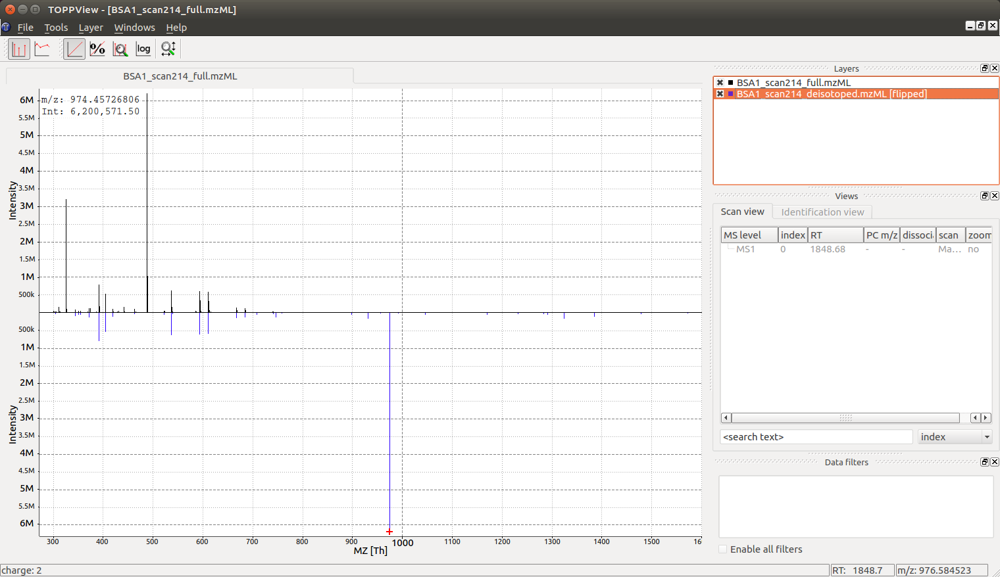

Charge and Isotope Deconvolution¶
A single mass spectrum contains measurements of one or more analytes and the m/z values recorded for these analytes. Most analytes produce multiple signals in the mass spectrometer, due to the natural abundance of carbon 13 (naturally occurring at ca. 1% frequency) and the large amount of carbon atoms in most organic molecules, most analytes produce a so-called isotopic pattern with a monoisotopic peak (all carbon are C12) and a first isotopic peak (exactly one carbon atom is a C13), a second isotopic peak (exactly two atoms are C13) etc. Note that also other elements can contribute to the isotope pattern, see the Chemistry section for further details.
In addition, each analyte may appear in more than one charge state and adduct
state, a singly charge analyte [M+H]+ may be accompanied by a doubly
charged analyte [M+2H]++ or a sodium adduct [M+Na]+. In the case of a
multiply charged peptide, the isotopic traces are spaced by PROTON_MASS /
charge_state which is often close to 0.5 m/z for doubly charged analytes,
0.33 m/z for triply charged analytes etc. Note: tryptic peptides often appear
at least doubly charged, while small molecules often carry a single charge but
can have adducts other than hydrogen.
Single peak example¶
from pyopenms import *
charge = 2
seq = AASequence.fromString("DFPIANGER")
seq_formula = seq.getFormula() + EmpiricalFormula("H" + str(charge))
isotopes = seq_formula.getIsotopeDistribution( CoarseIsotopePatternGenerator(6) )
print("[M+H]+ weight:", seq.getMonoWeight(Residue.ResidueType.Full, 1))
# Append isotopic distribution to spectrum
s = MSSpectrum()
for iso in isotopes.getContainer():
iso.setMZ( iso.getMZ() / charge )
s.push_back(iso)
print ("Isotope", iso.getMZ(), ":", iso.getIntensity())
Deisotoper.deisotopeAndSingleChargeDefault(s, 10, True)
for p in s:
print(p.getMZ(), p.getIntensity() )
Note that the algorithm presented here as some heuristics built into it, such
as assuming that the isotopic peaks will decrease after the first isotopic
peak. This heuristic can be tuned by changing the parameter
use_decreasing_model and start_intensity_check. In this case, the
second isotopic peak is the highest in intensity and the
start_intensity_check parameter needs to be set to 3.
from pyopenms import *
charge = 4
seq = AASequence.fromString("DFPIANGERDFPIANGERDFPIANGERDFPIANGER")
seq_formula = seq.getFormula() + EmpiricalFormula("H" + str(charge))
isotopes = seq_formula.getIsotopeDistribution( CoarseIsotopePatternGenerator(8) )
print("[M+H]+ weight:", seq.getMonoWeight(Residue.ResidueType.Full, 1))
# Append isotopic distribution to spectrum
s = MSSpectrum()
for iso in isotopes.getContainer():
iso.setMZ( iso.getMZ() / charge )
s.push_back(iso)
print ("Isotope", iso.getMZ(), ":", iso.getIntensity())
min_charge = 1
min_isotopes = 2
max_isotopes = 10
use_decreasing_model = True
start_intensity_check = 3
Deisotoper.deisotopeAndSingleCharge(s, 10, True, min_charge, charge, True,
min_isotopes, max_isotopes,
True, True, True,
use_decreasing_model, start_intensity_check, False)
for p in s:
print(p.getMZ(), p.getIntensity() )
Full spectral de-isotoping¶
In the following code segment, we will use a sample measurement of BSA (Bovine Serum Albumin), and apply a simple algorithm in OpenMS for “deisotoping” a mass spectrum, which means grouping peaks of the same isotopic pattern charge state:
from urllib.request import urlretrieve
# from urllib import urlretrieve # use this code for Python 2.x
gh = "https://raw.githubusercontent.com/OpenMS/OpenMS/develop"
urlretrieve (gh +"/share/OpenMS/examples/BSA/BSA1.mzML", "BSA1.mzML")
from pyopenms import *
e = MSExperiment()
MzMLFile().load("BSA1.mzML", e)
s = e[214]
s.setFloatDataArrays([])
Deisotoper.deisotopeAndSingleCharge(s, 0.1, False, 1, 3, True, 2, 10, True, True)
print(e[214].size())
print(s.size())
e2 = MSExperiment()
e2.addSpectrum(e[214])
MzMLFile().store("BSA1_scan214_full.mzML", e2)
e2 = MSExperiment()
e2.addSpectrum(s)
MzMLFile().store("BSA1_scan214_deisotoped.mzML", e2)
maxvalue = max([p.getIntensity() for p in s])
for p in s:
if p.getIntensity() > 0.25 * maxvalue:
print(p.getMZ(), p.getIntensity() )
which produces the following output
140
41
974.4572680576728 6200571.5
974.4589691256419 3215808.75
As we can see, the algorithm has reduced 140 peaks to 41 deisotoped peaks. It also has identified a molecule at 974.45 m/z as the most intense peak in the data (basepeak).
Visualization¶
The reason we see two peaks very close together becomes apparent
once we look at the data in TOPPView which indicates that the 974.4572680576728
peak is derived from a 2+ peak at m/z 487.73 and the peak at 974.4589691256419
is derived from a 3+ peak at m/z 325.49: the algorithm has identified a single
analyte in two charge states and deconvoluted the peaks to their nominal mass
of a [M+H]+ ion, which produces two peaks very close together (2+ and 3+
peak):

Looking at the full spectrum and comparing it to the original spectrum, we can see the original (centroided) spectrum on the top and the deisotoped spectrum on the bottom in blue. Note how hovering over a peak in the deisotoped spectrum indicates the charge state:
In the next section, we will look at 2-dimensional deisotoping where instead of a single spectrum, multiple spectra from a LC-MS experiments are analyzed together. There algorithms analyze the full 2-dimensional (m/z and RT) signal and are generally more powerful than the 1-dimensional algorithm discussed here. However, not all data is 2 dimensional and the algorithm discussed here has many application in practice (e.g. single mass spectra, fragment ion spectra in DDA etc.).